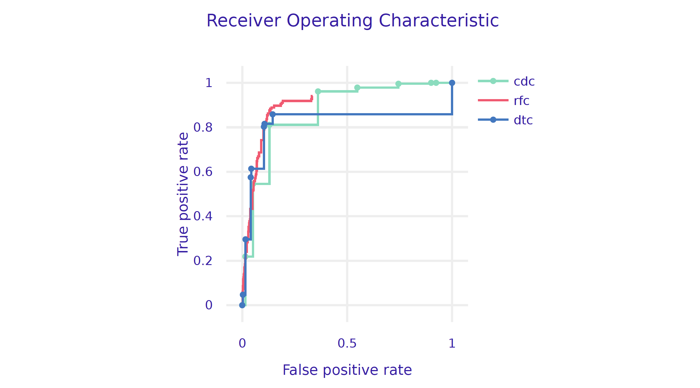

from sklearn.ensemble import RandomForestClassifier
model_rfc = RandomForestClassifier(n_estimators=100, random_state=0)
model_rfc.fit(covid_spring.drop('Death', axis=1), covid_spring.Death)Step 4. Plant a forest
Decision trees have many advantages, especially when it comes to interpretability and transparency. From a modelling perspective, deep trees have low bias but high variance (easily overfit to the data), while shallow trees have low variance but high bias (do not catch some relations). Can we improve both flexibility and stability?
In 2001, Leo Breiman proposed a new family of models, called random forests (Breiman 2001), which aggregate decisions from an ensemble of trees trained on bootstrap samples.
Breiman, Leo. 2001. “Random Forests.” Machine Learning 45 (1): 5–32.
The term bootstrap refers to the saying “pull oneself up by one’s bootstraps” which relates to one of the tales of Baron Munchausen. It means to solve an impossible problem without outside help. In the original, the Baron pulled himself out of the swamp by his own hair. In the case of random forests, we have no new data, yet by creating bootstrap copies, we are able to control and reduce the variance of the predictive model.
Random forests combine two interesting concepts. First, combining multiple weaker models produces a stronger and more stable model. Second, the more diverse the individual models, the greater the benefit of averaging them. To increase the diversity of models, Breiman used the bootstrap technique. Bootstrap is today a very widespread and powerful statistical procedure.
The algorithm for training of random forest is presented in Figure 1. In short, it creates \(B\) bootstrap copies of the dataset by sampling rows with replacement (called bootstrap samples). On each bootstrap copy of the data one deep tree is trained. To increase the variability between trees, the procedure for split selection is changed in a way that only a~random subset of \(m\) variables is considered for a single node.
During the prediction phase, the results from particular trees are aggregated. Boostrap samples have out-of-bag (OOB) subsets, i.e. observations there were not selected during sampling on which the performance of the model can be evaluated. Such a procedure improves model generalization by reducing the variance of individual trees.
A detailed description of the random forest algorithm is available at https://tinyurl.com/RF2001.
Training a random forest model requires specification of hyperparameters such as \(B\) - the number of trees, \(m\) - the size of the subset of variables from which to select split candidates for a single node, maximum tree depth, minimum node size, etc. You will find more about the selection of hyperparameters in the next section, but fortunately the random forest algorithm is quite robust to the selection of hyperparameters. Thanks to all these advantages, random forest is a very popular and efficient technique for predictive modelling.
Python snippets
The most common way to train a decision tree in Python is by using the RandomForestClassifier class from sklearn.ensemble module. Scikit-learn provides a straightforward implementation of Random Forest algorithms. As with other Scikit-learn models the training process typically involves two steps: (1) create an instance of the classifier specifying any desired hyperparameters like number of trees, (2) train the model to the training data using the fit method.
A trained model can be turned into a dalex explainer. Note that we set the label argument to control name of the model presented in diagnostic plots.
explainer_rfc = dx.Explainer(
model=model_rfc,
data=covid_summer.drop('Death', axis=1),
y=covid_summer.Death,
label='rfc'
)We can now check how good this model is. As expected, a random forest model has better performance/AUC than a single tree.
performance_rfc = explainer_rfc.model_performance(
model_type="classification", cutoff=0.1)
performance_rfc.resultperformance_cdc.plot([performance_rfc, performance_dtc],
geom="roc")
R snippets
The two most popular packages for training random forests in R are randomForest (Liaw and Wiener 2002) and ranger (Wright and Ziegler 2017). Both are easy to use, efficient and well parameterized. But here we use mlr3 toolkit for model training. It adds an additional level of abstraction, is a little more complex to use, but has additional features that will be used in the next section devoted to hyperparameters.
Liaw, Andy, and Matthew Wiener. 2002. “Classification and Regression by randomForest.” R News 2 (3): 18–22.
Wright, Marvin N., and Andreas Ziegler. 2017. “ranger: A Fast Implementation of Random Forests for High Dimensional Data in C++ and R.” Journal of Statistical Software 77 (1): 1–17.
Lang, Michel, Martin Binder, Jakob Richter, Patrick Schratz, Florian Pfisterer, Stefan Coors, Quay Au, Giuseppe Casalicchio, Lars Kotthoff, and Bernd Bischl. 2019. “mlr3: A Modern Object-Oriented Machine Learning Framework in R.” Journal of Open Source Software. https://doi.org/10.21105/joss.01903.
Training a model with mlr3 (Lang et al. 2019) is performed in three steps.
- Define the prediction task, an object that remembers the training data and the target, i.e. the variable that should be predicted
library("mlr3")
(covid_task <- TaskClassif$new(id = "covid_spring",
backend = covid_spring,
target = "Death", positive = "Yes"))
# <TaskClassif:covid_spring> (10000 x 8)
# * Target: Death
# * Properties: twoclass
# * Features (7):
# - fct (6): Cancer, Cardiovascular.Diseases, Diabetes,
# Gender, Kidney.Diseases, Neurological.Diseases
# - int (1): Age- Select the family of models in which we want to look for a solution. There are a lot of algorithms to choose from, see the documentation. Set
"classif.ranger"for the random forests models.
library("mlr3learners")
library("ranger")
covid_ranger <- lrn("classif.ranger", predict_type="prob",
num.trees=25)- Train the model with the method. The package uses R6 classes, so this method modifies the object in place.
covid_ranger$train(covid_task)A trained model can be turned into a DALEX explainer. Note that the predict_function is again slightly different. DALEX would guess this function based on the class of the model, but we point it out explicitly to make it easier to understand what is going on.
model_ranger <- explain(covid_ranger,
predict_function = function(m,x)
predict(m, x, predict_type = "prob")[,1],
data = covid_summer,
y = covid_summer$Death == "Yes",
type = "classification", label = "Ranger")We can now check how good this model is. As expected, a random forest model has better performance/AUC than a single tree.
(mp_ranger <- model_performance(model_ranger))
# Measures for: classification
# recall : 0.04291845
# precision : 0.4347826
# f1 : 0.078125
# accuracy : 0.9764
# auc : 0.9425837And finally we plot both ROC curves.
plot(mp_ranger, mp_tree, mp_cdc, geom= "roc")